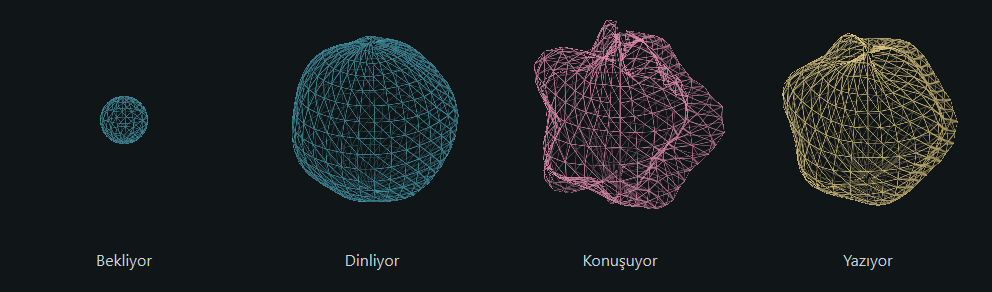

Açık kaynak · Windows
Tını
Konuş. Yazıya dönüşsün.
Türkçe konuşmanı seçtiğin metin alanına yazan, masaüstünde küçük bir küre olarak duran dikte uygulamam. İlk model indirmesinin ardından çevrimdışı çalışır; ses kaydetmez, abonelik veya API anahtarı istemez.
- Ctrl + Alt + Boşluk ile dikteyi başlat ve bitir.
- Sesine tepki veren, sürüklenebilir küre arayüzü.
- Yerel konuşma tanıma; Windows x64 ve NVIDIA ekran kartı için.